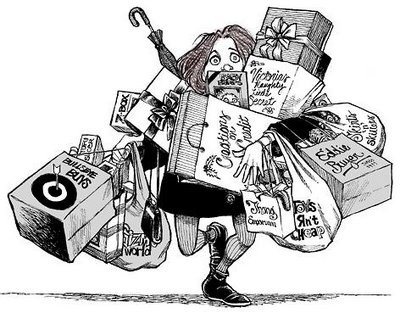
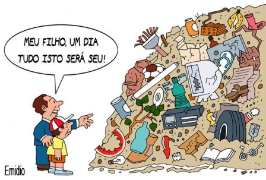

Consumismo
Consumismo
Hoje em dia temos acesso a muitos produtos bem intereçantes nas lojas e super mercados, porem muitas pessoas praticam o Consumismo que nada mas e que o cosumo exagerado de produtos e a compra de coisas desnecessarias, e sem o descarte correto destes produtos.
 Para minimizar os danos ao ambiente nos podemos: parar de gastar inpulcivamente, economizar, sempre pesquisar os preços, comprar itens de qualidade.